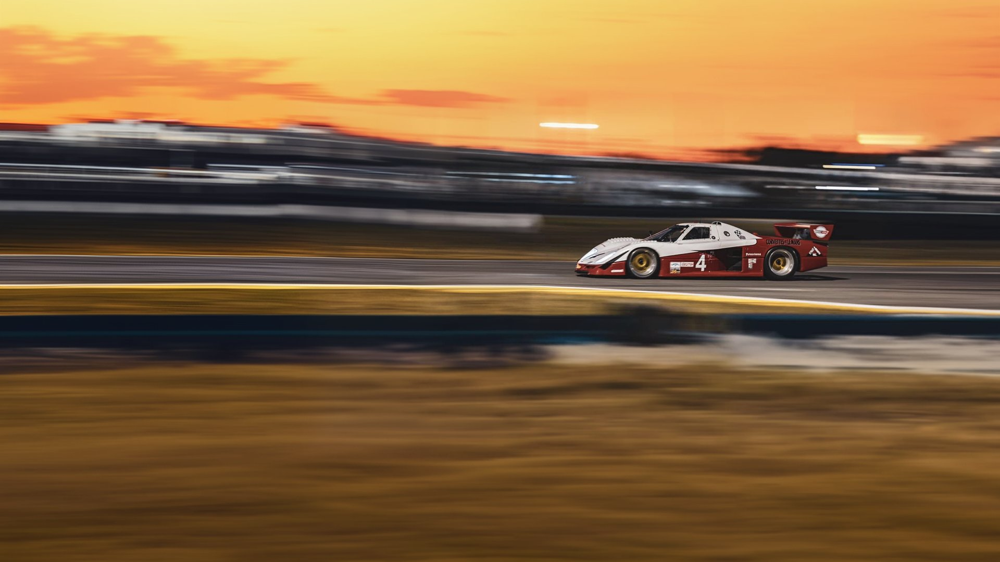

1923 · Benjamin · Batavia · 1953 · Jim · Skokie · 1972 · Rick · 1976 · #76 · Le Mans · 218 mph · Lake Forest Sports Cars · Father and son · Next, the GT · 1923 · Benjamin · Batavia · 1953 · Jim · Skokie · 1972 · Rick · 1976 · #76 · Le Mans · 218 mph · Lake Forest Sports Cars · Father and son · Next, the GT ·
1923
1923
Where it startsBatavia, New York
Benjamin Mancuso, a pioneer dealer in Batavia, New York, founds the family's automobile business.
Source: Fra Noi, “Andrettis' heirs”, February 2005.
Four generationsof the Mancuso automobile business
I
Benjamin
Pioneer dealer · Batavia, NY
Founds the family automobile business in 1923. Rick would later name his grandfather as the man who inspired him.
II
Jim
Mancuso Chevrolet · Skokie
Opens Mancuso Chevrolet in 1953. A road rallyer, and a columnist for Ward's: “Mancuso on service”.
III
Rick & Rob
The dealership goes racing
Sell cars with their father. Rick races from 1972 and later runs Lake Forest Sports Cars; Rob is 1986 SCCA Midwest Council champion.
IV
Adam
Father and son on track
Rick's son. Go-karts at 12, Skip Barber Racing School at Road America; races Lolas alongside his father.
Sources: Fra Noi, “Andrettis' heirs”, February 2005; Ward's Dealer Business, March 2001.
02 — 1953
Mancuso ChevroletSkokie, Illinois
His son Jim opens Mancuso Chevrolet in Skokie, Illinois.
Jim was also an avid road rallyer, a regular in a Great Lakes version of Italy's Mille Miglia — the first sign of the racing that would follow.
Source: Fra Noi, February 2005.
A Yenko “Deuce” flyer, stamped by the Skokie dealership. Date not recorded.
Jim Mancuso · 1916 – 2001
A dealer aheadof his time
“Never, ever be rude — unintentionally.”
He practised customer service and fair dealing before they were industry standards: clinics in the 1960s and '70s teaching women how to buy a car and have it serviced, a “hot line” booth in the service department. To his son Rob, on graduating from Princeton: “Forget all that. Let's sell cars.”
Ward's Dealer Business, “Farewell to a late, great dealer: James Mancuso”, March 2001.
Rick at the family dealership: a letter on Mancuso Chevrolet paper. Date not recorded.
Skokie, IllinoisMancuso Chevrolet, four blocks on.
“OK Used Cars” — Mancuso Chevrolet. Date and place not recorded.
76
1972 · 1976
Rick takes it racing.The #76, Mancuso Chevrolet's own Corvette.
Rick Mancuso took the green flag in 1972, in a 1958 Corvette prepared to B-Production specs. By 1976 Mancuso Chevrolet had its own Corvette on track — the pale-blue #76, by the Revell kit's account the first “customer” car John Greenwood built.
Source: Fra Noi, February 2005; Revell model kit (customer-car claim, to be confirmed).
Le Mans · 1976
Animated from a photograph courtesy of Albert Lamberts.
1976America's bicentennial. The French government invites Mancuso and his team to race a Corvette at Le Mans.
12–13 JuneThe 24 Hours of Le Mans.
GreenwoodThe wide-body Corvette, “Spirit of Le Mans 76”.
RickStays home to run the business. His teammates drive.
218 mphOn the Mulsanne Straight, the fastest entry on the course.
Hour 8A fuel malfunction ends its race.
June 1976
Le Mans218 mph on the Mulsanne
For America's bicentennial the French government invited Mancuso and his team to race a Corvette at Le Mans. Rick stayed home to run the business and turned the Greenwood wide-body Corvette over to his teammates.
It was the fastest entry on the course; a fuel malfunction ended its race in the eighth hour.
Source: Fra Noi, February 2005. The session of the 218 mph run is not recorded.
The local paper on race weekend: Le Maine Libre, 12–13 June 1976.
SaturdayOn track
Leaving in smoke. Photo courtesy of Albert Lamberts.
SaturdayIn the pit lane
Photo courtesy of Albert Lamberts.
Hour 8Out of the race
A fuel malfunction ends its race. Photo courtesy of Jean-Louis Pene.
Spirit of Le Mans 76Mancuso Chevrolet on the tail.
Date and place not recorded.

The red car · 1984
GTP Corvette #4.Lola T711, chassis HU T711-02.
GTP Corvette #4 at speed. Date and circuit not recorded.
Rick's dealership
Lake Forest Sports Cars.Since sold.
Aston Martin #009 and #007, “Lake Forest Sportscars”. Date not recorded.
Rick became president and CEO of Lake Forest Sports Cars, the family's dealership for premium imports. He raced a Ferrari BB512LM, 308 GTB, 348, 355 and F40, a Maserati Bi-Turbo SSGT and a Mosler Consulier GTP in endurance races at Sebring, Daytona, Mid-Ohio and Nelson Ledges.
The dealership has since been sold. It remains part of the family's story.
Source: Fra Noi, February 2005; the family, October 2026.
2000s
Father and son.In Aston Martin racing green.
Lola #4, “Rick Mancuso” on the cockpit side. Circuit and date not recorded.
Rick's son Adam started driving go-karts at 12 and trained at the Skip Barber Racing School at Road America. Father and son raced custom Lola Sports Racers in SCCA competition, painted Aston Martin racing green and carrying the family crest on the nose.
“Andrettis' heirs”: Adam and Rick in Fra Noi, February 2005.
The GT.A tribute to the Chevrolet Corvette
The authenticity and style of original Corvettes, with modern comfort and driveability. Only by Mancuso.
Launching soon · Specification and photography to be announced